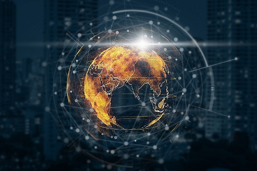
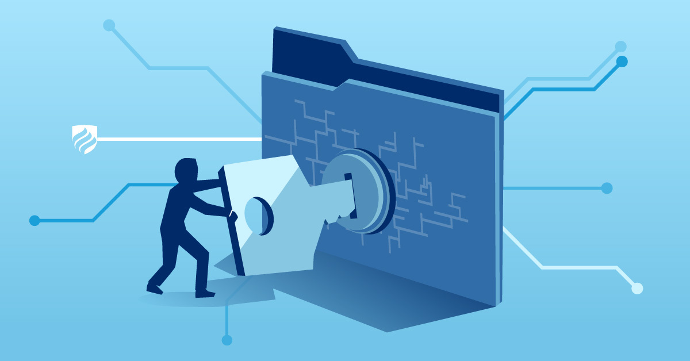

The concept of cloud computing has existed since the 1950’s, when mainframe computing allowed a central computer to be accessed by multiple users. A single user did not need the considerable processing power or storage the mainframe provided. The suitable economic solution of providing shared access for multiple users to a single sophisticated resource was born, with terminals serving the sole function of providing users access to the mainframe (Neto, 2014). In the 1970’s, this concept was further enhanced with virtual machines – using software to create a layer over the bare metal hardware of a single computer with the elements of a processor, memory, and storage, allowing it to be utilized by multiple virtual computers - called virtual machines (VMs). Each individual VM behaves as an independent computer and runs its own operating system (OS) by using just a portion of the underlying hardware.
Virtualization gives more efficient use of the physical hardware or server with these virtual environments - and therefore a better return on the investment costs. The VMs simulate physical computer servers in purely software form. Hypervisors are the software layer over the hardware which coordinates the VMs as the interface between, giving each access to the resources it needs to work. The hypervisor also prevents the VMs from interfering with one another or imposing on each other’s computer cycles or memory space (IBM Cloud Education, 2019). Virtualization is a fundamental part in the foundation of the cloud we know today, and the development of the Internet gives users access to servers across the world and the use of hardware, storage and software not kept on their own physical computer.
The cloud is an essential part of life in today’s online world. Millions of worldwide users access it daily for web searches, connecting and working remotely, online shopping, news articles, social media, music, and entertainment streaming services - all done via the cloud. Emails no longer need to be sent from the same computer running a specific program - now accessed anywhere, anytime and sent via a web-based service eg. Hotmail, who takes care of storing and processing their client’s emails through their own servers (Woodford, 2020). Services offered via modern day cloud computing, set to grow and expand in the coming years, are outlined as follows:
Infrastructure as a Service – or IaaS – provides clients or organizations access to storage, networking, and servers as part of their resources. Companies no longer need to keep physical hardware on site and only pay for what they need, without the effort of tasks like backing up, maintenance, and archiving. Amazon Web Services offers IaaS through their cloud platform.
Platform as a Service – or PaaS – offers access to a cloud environment from which a developer can develop, manage and then deliver their own applications without having to also host them. Google App engine offers this service via their Google managed data centers.
Software as a Service – or SaaS – is the one most of us are familiar with and likely to have used. It is cloud based software and applications that can be accessed via the web or a service provider, allowing for users to store and collaborate on projects. Github is classed as a SaaS, providing user control software with space to store code (IBM Cloud Education, 2019).
What does the future of the cloud look like? By 2025, the cloud will serve as the key element in end-user and business innovation. It will do this by offering next-generation services to those utilizing the cloud, giving them greater capabilities to enhance their core competencies (Lerner, 2021). The pandemic has already pushed acceleration for companies moving to the cloud, supporting the world economy by enabling business continuity and allowing employees to work remotely with accessibility and flexibility (Goodison, 2020).
Edge cloud computing is expected to see further development with the rise of connect devices (Internet of Things), and by 2025 nearly 30% of data is estimated to need real-time processing (Analytics Insight, 2021). Edge computing can reduce data traffic by processing data closer to the customer. This will require three times more scaled-down data centers to be built geographically closer to the edge of the network, where the user content is consumed and created (Mobile Experts, 2019). The need for more physical yet smaller data centers will generate construction work and then require on-site employees. Mobilization of edge computing will enhance user-end experiences and reduce latency, for example when accessing entertainment streaming services like Netflix.
Artificial intelligence cloud computing merges the capabilities of machine learning with cloud-based environments. Everyday examples of this include Amazon Alexa, Google Home and Siri as digital assistants - able to make connected and intuitive experiences, such as choosing music, adjusting home lighting or heating, or making online purchases instantly. It was recently reported that the annual AI market will globally reach $89 billion by 2025 (EZmarketing, 2020). SaaS providers are now adding AI tools into software, with the ability to capture customer data to allow better functionality to users by personalizing their customer relationships. AI can help clients/businesses identify customer patterns in interactions, providing insights and recommendations for future interactions. AI turns data into actionable insights in areas such as sales and customer engagements. Cloud computing has made AI technology available to even the smallest of clients and businesses, enabling them to utilize their data to provide better services, become more efficient in their processes, streamline workloads, and enhance productivity via automation of repetitive tasks in IT infrastructures. AI in the cloud means more processing power, identification of patterns, and predictions with its growing analytical capabilities and deep learning algorithms. It may soon be able to independently run routine operations, by monitoring and making corrections to systems – and forecast stock portfolios, real estate investments, disease prediction, and streamlined delivery services. Advances in cognitive computing and algorithms combining language processing, data mining and pattern recognition are making this future of AI possible. Automation by AI in the workforce may eliminate some positions, yet it is set to create jobs – with estimates of AI creating up to 97 million new jobs for job seekers by 2025 (Rodrigeuz, 2021).
Serverless computing is increasing in popularity among developers and product owners, as Function as a Service or FaaS. It allows the team or customer writing the code to focus on the core product - while the provider takes care of infrastructure concerns like servers, hardware, container management, virtual machines and even any tasks – for example multithreading - that are often built into the application code (Fruhlinger, 2019). In turn, this allows product owners to spend less on infrastructure and running time costs, with better service scalability - unlike traditional architecture. Serverless computing allows for developers to reach the market faster, for less cost to investors or product owners, with this potential to scale (Brunko,2020). Serverless computing in the cloud opens the door for enhanced developer productivity, reduced cost for infrastructure, and furthers innovation for the future of applications and delivery of new products and services for clients and customers.
Cloud gaming is set to be revolutionized on the cloud, with the likes of Amazon and other startups moving to offer their own platforms for cloud gaming – where users can pay a monthly subscription to access large libraries of games, instead of the traditional method of downloading the game onto a user’s device (smart phone, gaming console, PC). Latency and bandwidth have been the main challenges of game streaming, compared to streaming film and television entertainment - where the end content is the same for every user and is delivered downstream. Game players are continuously influencing the media experience shown to them, with each player receiving an individual view. Need for greater bandwidth for cloud gaming is an important factor. Large scale uptake of 5G is possibly the future in delivery of cloud gaming services, enabling a richer experience and the incentive needed to attract gamers to the cloud. Telecom companies will need to review strategies for delivering the needed network requirements and comparative costs to gaming households (Arkenburg, 2020). The future of cloud gaming may eradicate the need for gamers to invest in hardware such as high-end PCs or gaming consoles, as long as networks connecting to the cloud can handle the user traffic in cost sensitive ways.
The cloud is set to provide the foundations for future IT developments, accessible to a wide array of global users. It aims to enhance user experiences, opportunities and create further employment opportunities. We live in an exciting new technological world, and the cloud has personally affected me and those close to me in positive ways. I can access and complete a university degree via Canvas with RMIT, enhancing future career opportunities. I can connect and collaborate with students for team projects on SaaS cloud services - and then future business - via Microsoft Teams and GitHub. I can safely ask artificial intelligence – Hey Google - for assistance and directions, hands free while driving my car. I can access and enjoy libraries of entertainment in the form of Netflix streaming. Our family business has a website with user accounts and online products for purchase to be hosted and accessed via the cloud, boosting sales and customer relations. Cost effect availability of serverless computing or PaaS offers me the opportunity to develop games or applications. The potential for startup ideas to get off the ground becomes more achievable, with access to a wide range of services and infrastructure via the cloud, as well as the prospect of new and developing jobs. The impact of cloud computing has been in shaping a connected, innovative, and agile world for individual users to big business – with the future of smart cities including automated vehicles, efficient power plants and farms, and enhanced public transport on the not-to-distant horizon (Linke, 2021).

Cybersecurity refers to the body of technologies, processes, and practices designed to protect networks, devices, programs, and data from attack, damage, or unauthorized access (De Groot, J. 2021), which aim to gain access to sensitive information and/or interrupting business processes.
A wide variety of sub-categories is encompassed by cybersecurity. These include:
To be able to explore and describe the “state of the art” in this specific area in terms of technology involved, we first must delve into one of the sub-categories that fall under cybersecurity. Here we will investigate what network security involves and what is used to enforce this type of security.
Network security is a broad term that covers a large group of technologies. Simply put, network security is anything designed to protect the integrity and accessibility of computer networks and data, which employs the use of both software and hardware technology.
In terms of network security, there are a vast number of layers that need to be addressed when it comes to defending people and an organization from cyberattacks. Network security consists of three different controls points. These include physical, technical, and administrative. There are numerous ways to defend against these threats and attacks to network security, including:
As there are a lot of different software and hardware technologies used to defend against network attacks and threats, we will be analysing what firewalls are, and what they do to protect networks from attacks and threats.
What is a firewall? A firewall is a network security device that monitors incoming and outgoing network traffic and decides whether to allow or block specific traffic based on a defined set of security rules (Cisco 2021). Firewalls establish a barrier between internal networks and incoming traffic from external traffic for example: the internet.
How does it work? A firewall will analyse traffic based on a set of security rules that have been set by this type of firewall. It will then filter any/all traffic, allowing secure sources through and blocking any suspicious and unsecured sources of traffic that might cause an attack on the network.
There are different types of firewalls. These include:
Now that we have explored categories and sub-categories of network security and firewalls, we are going to look at what is considered as “state of the art” in terms of firewalls. Technology is advancing and changing at a rapid pace, and everyone, especially millennials who were born after the 2000s, are moving into a more digital platform for seeking and storing private information. With the advancement of technology, also comes the advancement of cyber threats, which aim to gain unauthorized access to an individuals or business sensitive data and information. For this ever-looming threat, is the need of constant improvement in technologies that protect us against a threat that we cannot see.
Next-generation firewalls are currently seen as the future of firewalls. As their name suggests, next generation firewalls are a more advanced version of the traditional firewall, and they offer the same benefits. Like regular firewalls, NGFW use both static and dynamic packet filtering and VPN support to ensure that all connections between the network, internet, and firewall are valid and secure. Both firewall types should also be able to translate network and port addresses in order to map IPs (Book, C. 2021).
Further advancements of next-generation firewalls mainly involve software and hardware updates to protect from viruses and ransomware. Not much else is needed when it comes to this type of firewall as it is the whole package when protecting business networks and data. With the ability to protect from viruses and ransomware, along with spam protection and endpoint security - there is not much more you can ask for in terms of cyber protection, when everything is included from one thing.
Cybersecurity in general is very hard to be pro-active in. Development in this field is, in some eyes, considered as “playing catch up”. For example, video games have hundreds and thousands of people every day who try to find a backdoor to hack into their systems, aiming to exploit certain features or use programs to enhance their gameplay that is not considered fair. This is where a business or company's cybersecurity team try to catch up with hackers and cyber threats, to patch and update their security systems. This can be said for firewalls, where there are constantly cyber threats and attacks that are trying to find a way into a business’ systems and gain access to their private and sensitive data.
Firewalls are an essential part of cybersecurity - from the day computers were invented, the internet developed, to the present and future. As time goes by, technology is advancing to the point where almost everything will be digital. Today, we are moving towards becoming a cashless/card-less society (with a push due to the recent pandemic). Card-less examples include our licenses used and stored digitally, and our rewards and health cards conveniently kept in our digital wallets on our phones.
Due to these reasons, cybersecurity has become even more critical to our everyday lives. You don’t know when you’ll be subject to a cyberattack, where your private data is hacked into and used against you. You don’t know when a family member or friend has had their social media or other confidential information exposed through a cyberattack, and then sent you links to websites containing viruses and ransomware. Cybersecurity impacts everyone’s lives on some scale and for me and others we should be wary of who/where/what we give our confidential data to, and how secure that information is stored.
Machine Learning is a subset of Artificial Intelligence. Machine learning can be thought of as software 2.O. Traditional programming (software 1.O) uses a set of inputs and a programmed instruction to produce the desired output. Machine learning has a different approach, where it uses a set of inputs and desired outputs which are then converted into numbers, so that the machine learning algorithm looks at their patterns to “learn” the corresponding algorithm.
There is no doubt that artificial intelligence, machine learning and data science have become the most powerful and forward-looking force in technology over the past decade. These technologies have allowed for breakthrough insights and applications that may truly change the world for the better. This is, of course, thanks to the symbiosis of data collection, hardware innovation, and driven researchers that have taken hold over the 2010s. This has led us to bestow computers mind boggling abilities in everything from vision, to natural language processing, to audio understanding, and complex signal processing.
AI and machine learning have expanded to a multitude of industries and enterprise use cases, with more and more companies adopting these approaches every day.
As evidence of this, a recent study found that 49% of organizations reported they were exploring or “just looking” into deploying machine learning, while 51% claimed to be early adopters (36%) or sophisticated users (15%).
This data, while not completely comprehensive, is indicative of the growing trends in 2020 and beyond for machine learning and AI applications. Certain aspects of machine learning (data mining, advanced algorithms, and predictive analytics) are in particular demand, reflective of the growing role that information processing and analysis plays in the 21st century business environment.
Machine learning has become so pervasive that most of us use it daily without noticing. Whether you’re searching the web, consuming weather reports, driving a car or using speech recognition on a smartphone, you’re most likely benefiting from machine learning. Digital businesses are increasingly adopting machine learning, driven by the availability of sensor data, expanding bandwidth and sinking storage costs.
There is an abundance of examples across organizations that demonstrate what we can do with machine learning. Here are just a few:
Machine Learning is shaping the future of almost every company and every citizen on the planet. It has served as the guiding force behind new technologies such as big data, robotics, IoT, and it will continue to do so for the near future. Here are some predictions about Machine Learning (ML), based on current technology trends and ML’s systematic progression toward maturity:
To make all this possible, there will be a big rush among hardware vendors to enhance CPU power to accommodate ML data processing. More accurately, hardware vendors will be pushed to redesign their machines to do justice to the powers of ML.
As with most changes in life, there will be positive and negative impacts on society as artificial intelligence and machine learning continues to transform the world we live in.
Artificial intelligence and machine learning can dramatically improve the efficiencies of our workplaces and can augment the work humans do. When AI takes over repetitive or dangerous tasks, it frees up the human workforce to do work they are better equipped for — tasks that involve creativity and empathy among others. If people are doing work that is more engaging for them, it could increase happiness and job satisfaction.
With better monitoring and diagnostic capabilities, machine learning can dramatically influence healthcare. By improving the operations of healthcare facilities and medical organisations, AI can reduce operating costs and save money. The true impact will be in the care of patients. The potential for personalised treatment plans and drug protocols, as well as giving providers better access to information across medical facilities, will help to inform patient care and be life changing.
Our society will gain countless hours of productivity, with the introduction of autonomous transportation and ML influencing our traffic congestion issues - not to mention the other ways it will improve on-the-job productivity. Freed up from stressful commutes, humans will be able to spend their time in a variety of other ways.
The way we uncover criminal activity and solve crimes will be enhanced with machine learning. Facial recognition technology is becoming just as common as fingerprints. The use of ML in the justice system also presents many opportunities to figure out how to effectively use the technology without crossing an individual’s privacy.
On the other hand, the transformative impact of artificial intelligence on our society will have far-reaching economic, legal, political and regulatory implications that we need to be discussing and preparing for. Determining who is at fault if an autonomous vehicle hurts a pedestrian or how to manage a global autonomous arms race are just a couple of examples of the challenges to be faced.
Will machines become super-intelligent and will humans eventually lose control? While there is debate around how likely this scenario will be, we do know that there are always unforeseen consequences when new technology is introduced. Those unintended outcomes of artificial intelligence will likely challenge us all.
For many workers, the advent of AI-powered technologies seems to be synonymous with permanent lay-off. Factory worker will be replaced by much more efficient robots that will be able to work 24/7. Retailers are already using robotic fulfillment systems to pick orders in their warehouses. Google's project to build autonomous vehicles, Waymo, has launched its first commercial self-driving car service in the US, which in the long term will remove the need for a human taxi driver. Ford is even working on automating delivery services from start to finish, with a two-legged, two-armed robot that can walk around neighbourhoods carrying parcels from the delivery vehicle right up to your doorstep. But off course not all jobs will be superseded by AI, according to consultancy McKinsey, fewer than 5% of occupations can be entirely automated using current technology. But over half of jobs could have 30% of their activities taken on by AI. Rather than robots taking over, therefore, it looks like the future will be about task-sharing.
McKinsey also estimates that automation will cause up to 800 million individuals around the world to be displaced from their jobs by 2030 – a statistic that will sound ominous, to say the least, to most of the workforce. But the firm's research also shows that in nearly all scenarios where there is sufficient investment and growth, most countries can expect to be at very near full employment by the same year.
Machine learning and algorithms are currently having a direct impact on many aspects of our lives. whether we're looking to check our emails, get use instructions, find a track, or get movie recommendations. Most of us have already figured out that when we use websites with recommendation engines such as YouTube, Netflix or Amazon, every selection we make from the videos we like and dislike to how long we watch a film for and the kinds of products we purchase are all being monitored and recorded. Driven by machine learning, these sites are using this data to “recommend” or “suggest” other similar products, videos, or films that we might like. There’s also Siri, a machine learning speech recognition program designed to let us talk to the internet and interface with the data it contains without the awkwardness of a keyboard. To sum up, there are many instances in our daily lives when we are involved in and surrounded by AI. Voice-powered personal assistants, music and movies recommendations, enhanced decision making, avoiding traffic or real-time manifestations, instant machine translation, self-driving vehicles, and other powerful predictive capabilities are several examples and applications of how Artificial Intelligence is used today.
The last 20 years has seen a rise in popularity of a new type of personal computer – the single-board microcomputer. Distinct from a desktop computer, as the name implies the single-board computer often consists of a single printed circuit board, commonly foregoing expansion slots (add-on hardware is now becoming more frequent though). They are often implemented for single-purpose applications such as robotics controllers or for measuring and monitoring variables, such as temperature or fluid pressure.
The technology is not in fact new – many early personal computers through the 1970s were also single-board computers. However, with modern breakthroughs in processor design and manufacturing efficiency leading to huge decreases in physical size and price, these devices have gained massive popularity as hobby and education devices. There is a large number of competing products in the category now, but of particular note are the Arduino micro-controllers and the Raspberry Pi computers.
Initially developed in 2005 at the Interaction Design Institute Ivrea in Italy, Arduino units began selling to the public in December of 2011 and by mid-2013, it was estimated the 700,000 units were in the hands of hobbyists (Cuartielles, 2014). There are now many variations of the original Arduino unit available but all run on the similar idea: an affordable, easy-to-use device available to everybody for enabling creativity and education.
Inspired by the aforementioned single-board computers of the 1970s and early 1980s, the Raspberry Pi was developed from 2006-2011 by engineer Eben Upton. In response to the rapid growth of the internet (particularly, the rise of Google, Facebook et al.), Upton recognised that the world would need an influx of programmers and engineers to continue the internet’s development. The goal of the Raspberry Pi micro-computer (as well as the Raspberry Pi foundation) was to provide a device at around $30 that students could use to learn skills and develop their interest in information technology careers (Fromaget, 2018).
Important to note is that these devices serve different purposes and function differently. The Arduino models are micro-controllers – effectively inexpensive hardware designed to execute inputted code. The Raspberry Pi models however are microcomputers, capable of running a variety of (primarily Linux-based) operating systems. Although this is a key difference, the ethos and goals remain the same – to introduce coding and technology to students and hobbyists in an easy to use and inexpensive fashion.
It is perhaps not a coincidence that both units arrived at a similar time. Both devices, as well as similar other products, have benefited immensely from the manifestation of Moore’s Law – the ‘rule of thumb’ that suggests that processor technology will double in power and half in cost approximately every 18-24 months. This can be seen in a microcosm with the increase in power between Raspberry Pi models (many great comparison tables can be found online demonstrating this).
The technology similarly benefited from the smart-phone revolution of the later 2000s, which enabled the ‘Internet of Things’ to take it’s current form led by consumer products. Both Raspberry Pi and Arduino are frequently being the tools selected by hobbyists in the creation of IoT projects. The development is also enhanced by both brands offering device augmentation through ‘hats’ (hardware attached on top) (Raspberry Pi) and ‘shields’ (Arduino). These augmentations can incorporate additional input/output sensors, such as cameras, speakers, microphones, additional digital inputs and other sensors. Common hobbyist use cases include home brew IoT devices, gaming devices, sensors and cheap Linux machines.
From these humble beginnings, currently both Arduino and Raspberry Pi offer compelling hardware options. The Raspberry Pi 4 400, released in November 2020 sports a personal computer within a keyboard. Arduino meanwhile offers a vast variety of variations of the original Arduino Uno model, each catering to different use cases and specialties.
It is hard to measure the impact of these devices in relation to their stated goals – to encourage interest in coding and information technology. Google search trends show a steady increase in searches for the terms ‘Raspberry Pi’, ‘Arduino’ and ‘Python’ (an entry level coding language) since circa 2009 (Google Trends 2015), but this could be a reaction to marketing or media coverage rather than demonstrating success. It is likely however that the devices are responsible in some small measure to the increase of interest in python coding.
One tangible example of the impact of the technology though, is businesses using the devices to automate and monitor existing processes cheaply. One example is in a Sony-owned manufacturing plant in Wales. Head of Engineering, Kevin Edwards, is using 60 Raspberry Pis to monitor the manufacturing lines via camera feeds, temperature, vibration, and energy usage sensors. The information collected by the devices is fed though custom software to look out for any anomalies requiring human intervention (Olson, 2019). The implementation has been so successful in reducing human monitoring costs that Sony plans to roll out similar Raspberry Pi setups across other manufacturing plants in Japan and Malaysia.
While it is unlikely that micro-computers themselves will lead to automation on a scale that would render significant jobs redundant, the above example shows on a micro-scale the phenomenon of automation more broadly. An Arduino unit by itself cannot automate an entire manufacturing line, but the basic principle remains the same at scale.
With an automated future on the horizon, the current impact of the devices is almost entirely positive, allowing students and hobbyists access to cheap hardware with which to learn and build small projects. It is unlikely that component progress will slow down, so units will only become cheaper and more powerful over time.
On a personal level, I have a Raspberry Pi in my home that runs Raspberry Pi OS with a DNS sinkhole for tracking and web-based advertisement services. Unlike a software ad-blocker, the Linux-based application stops this material at the router level so it’s removed before the network connects to the device. As well as blocking ads and trackers, in theory the application would speed up our network as it filters out unwanted traffic. In practice, this is difficult to measure as our internet connection is wanting at best.
As part of studying information technology however, the possibilities offered by Raspberry Pi and Arduino units are very exciting. To be able to test out and put into practice what I learn in coding classes on inexpensive hardware removes any obstacles traditionally presented by the cost of a laptop or desktop computer. In line with what many hobbyists are already doing, I will be looking to use the devices to automate home tasks – turn the coffee machine on in time with my morning alarm, automate my home blinds in time with the sunrise and sunset and measure the soil moisture in some of my partner’s more temperamental houseplants.
Re-reading that last paragraph, it appears these devices are a remarkable success in that both globally and on a very personal level, they are being used in education. As they become more powerful and cheaper still, it would not surprise me to see these devices become a staple in everyone’s homes as a variety of IoT devices.